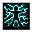

DCSS スポイラー
入口
モンスター
呪文
アイテム
固定アーティファクト
種族
職業
神
ダンジョン
変異
事典
wiki 翻訳
伝導の写本
Codex of Conductivity
英語版 CrawlWiki の記事「
Codex of Conductivity
」(0.34 向け、2026-05-19 版)の翻訳です。原文の著者は
編集履歴
をご覧ください。
伝導の写本
主な系統
風
おが屑からスノズカンバーまで、あらゆるものに電気が及ぼす影響についての網羅的な研究記録の集成で、呪文の公式と実用的な技術図面が散りばめられている。作者の筆跡はスプリガンの電気生理学についての章の途中で衝撃的なほど乱れており、作者の正体と自己保存の感覚の両方について、さまざまな憶測を呼んでいる。
呪文
タイル
呪文
系統
レベル
a -
稲妻の渦巻の鍛造
風
/
鍛造術
4

b -
弧状電撃
風
/
妖術
5
c -
マクスウェルの容量結合
風
8
変更履歴
この魔法書は
0.32
で追加された。